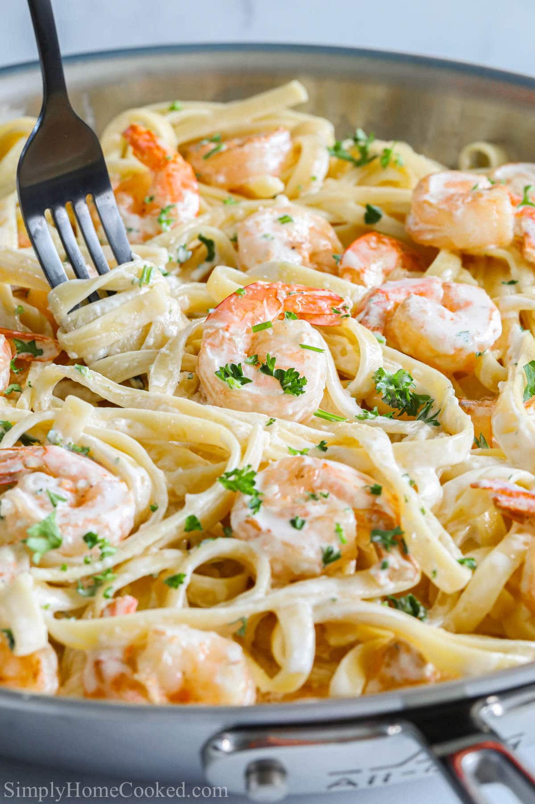

Shrimp Alfredo

Description:
The Shrimp Alfredo is a comfort food known by many across the world. The ease
needed to make such a dish as well as the richness of this meal makes it a
go to dish for many.
Ingredients
- 3/4 lb fettuccine or penne pasta
- 1 lb shrimp, peeled and deveined
- 1 Tbsp oil
- 1 small onion, finely chopped
- 2 Tbsp butter
- 1 garlic cove
- 2 cups double cream
- 1/3 cup parmesan cheese
- basil for finish
Instructions
- Cook 3/4 lb fettuccini noodles in salted water according to package instructions and drain.
Don't rinse (this helps the sauce stick to the noodles better).
- Lightly season shrimp with salt, pepper and paprika. Preheat a large skillet to med/high
and add 1 Tbsp oil. Once oil is hot, add shrimp in a single layer and cook 1-2 min per side or
just until fully cooked and no longer translucent. They should be golden/pink on the outside and
opaque white on the inside. Don't over-do it or they will be rubbery. Remove shrimp to a separate bowl.
-
In same pan, over medium/high heat, add 2 Tbsp butter and onion and sauté onion till golden. Stir
in garlic and sauté another minute. Stir in 1/3 cup white wine and reduce to 25% scraping the bottom to deglaze the pan.
-
Stir in Cream and simmer for 2 min. Next, sprinkle the top with 1/3 cup parmesan (or add to taste)
and stir just until creamy and smooth and remove from heat. Don't boil or the cheese will separate from
the cream. Add about 1/4 tsp paprika and season with S&P to taste.
-
Add the cooked shrimp and drained (un-rinsed pasta). Garnish with parsley, basil, extra parmesan or freshly cracked pepper if desired.